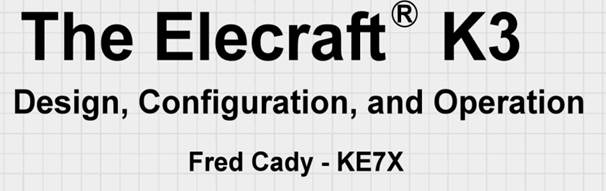

Pete, One item that affects the listening is the AGC. Elecraft has provided a number of parameters including a threshold that can make a difference. These are described pretty well in the K3 manual but for a more in-depth understanding and illustrations you should review Fed Cady’s book. See the title below – it is excellent must read.  73, Bob – W6OPO From: Chat1 [mailto:chat1-bounces@ncdxc.org] On Behalf Of PETER GAMBEE Hmm... I have both the K2 w/dsp and K3 with multiple 8-pole filters, and always find that the K2 seems quieter and more "easy listening." Have never been able to do decent side-by-side comparisons, so don't know if is just that the K3 is just a few dB hotter, and therefore more sensitive to band noise. Also haven't worked with the NR and NB settings, not to mention the Rx equalizer, enough to really master it all. Still have to say that the K2 seems to be less fatiguing to listen to for extended periods and seems to do a better job with band noise. Just glad to hear that others have had the same experience. On Feb 6, 2014, at 07:46 , chat-request@ncdxc.org wrote: From: Jeff Kinzli N6GQ <jeff@N6GQ.com> Subject: Re: [NCDXC Chat] Anyone use an audio pre-amp / filter with their K3? Date: February 6, 2014 at 07:36:38 PST To: Rich Holoch <rholoch@splicemachine.com> Cc: Chat NCDXC <chat@ncdxc.org>
|